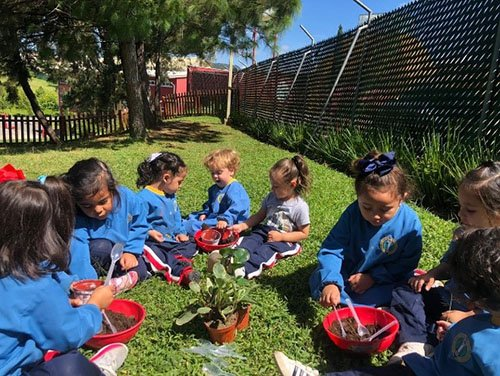

La importancia de la Educación Infantil se debe fundamentalmente a que es el período en el que el individuo asimila los mayores estímulos del medio y construye las bases para su formación posterior.
Consideramos dos niveles fundamentales y necesarios como parte del desarrollo infantil: un nivel inicial de reconocimiento y sensibilización con el medio social y físico, y un segundo nivel de afianzamiento y adquisición de las herramientas necesarias para el ingreso a la Educación Primaria.
Además, iniciamos al niño en el aprendizaje de la lengua inglesa, con un 50% de carga horaria dedicada a esta materia, con el principio de la globalización, articulando las distintas áreas que componen su currículo a fin de que esta educación le permita avanzar acorde con las necesidades y exigencias de la sociedad actual.
Perseguimos estimular y promover el desarrollo integral del niño durante este período, con la ayuda de un equipo de educadores de gran profesionalidad y calidad humana, que realizan un seguimiento continuo de la evolución de cada niño, y que mantienen una comunicación permanente y periódica con los padres.
Nuestra metodología activa, alegre, lúdica e imaginativa estimula en el niño su creatividad y capacidad de observación, proporcionando grandes resultados. Dicha metodología tiene como uno de sus apoyos fundamentales la inclusión de las nuevas tecnologías destacando una herramienta de vanguardia, el iPad, que permite mejorar el aprendizaje en todas sus vertientes.
Gracias a la privilegiada ubicación en plena naturaleza, y a las amplias instalaciones, los alumnos disponen de diferentes recursos como un huerto y animales, donde podrán investigar y descubrir en primera persona el medio natural que les rodea, fomentando así la educación ambiental.
Nuestra constante preocupación por el bienestar, el desarrollo evolutivo y el aprendizaje de nuestros alumnos, hacen de este centro un referente educativo de calidad en Guatemala.
